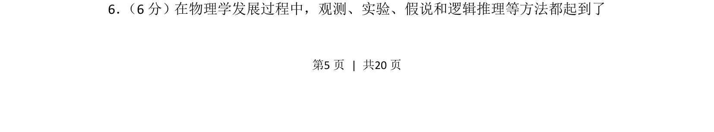
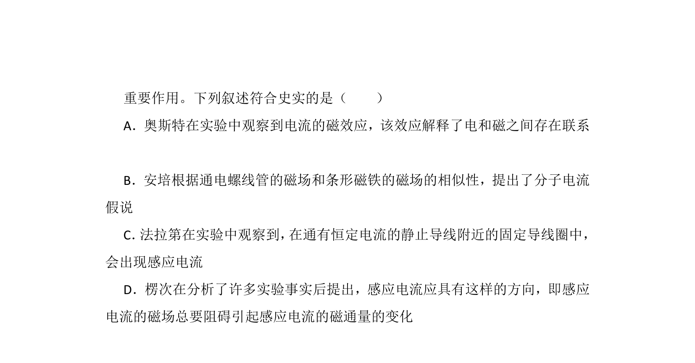
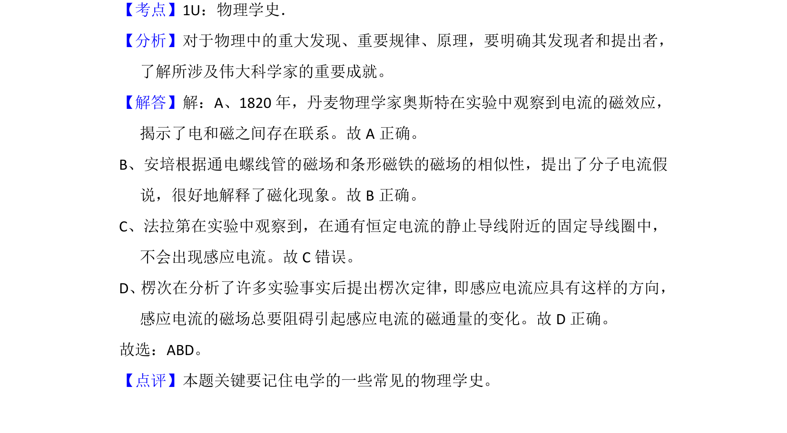

2013-新课标Ⅱ-06
吉林2013卷新课标Ⅱ不分题6题型选择难易
考点：逻辑推理 科学方法
题面


摘要
本题考查物理学研究方法的识别，涉及逻辑推理在科学发现中的作用。
关联考点
答案与解析

📄 原 PDF 第 5 页：素材/真题/吉林/2008-2024·（吉林）物理高考真题/2013年高考物理试卷（新课标Ⅱ）（解析卷）.pdf
题干文本
6． （6分）在物理学发展过程中，观测、实验、假说和逻辑推理等方法都起到了
解析文本